—— V5 · 原创长篇 ——
代号朱雀
第四章：根
↓ 向下滑动开始阅读 ↓
黎 明 后 的 C E O
辰光科技总部，清晨七点半。深圳的阳光透过落地玻璃幕墙洒进来，整个CEO办公室沐浴在暖金色的光里。我站在窗前，手握咖啡杯，俯瞰CBD的晨景。昨晚回来已经凌晨四点。洗了个澡，处理了三个伤口。现在——CEO模式启动。
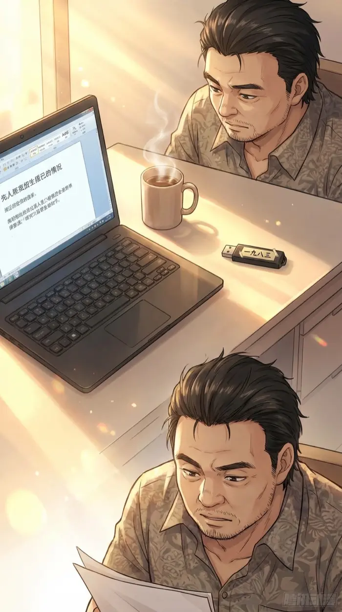
办公桌上：老秦给的U盘——黑色普通U盘，贴着一小块胶带，上面写着"1983"。旁边是笔记本电脑和一杯刚泡好的咖啡，热气袅袅，阳光在桌面上拉出一道温暖的光带。1983。老秦记得我的出生年。这个混蛋，死了五年还记得。
插入U盘。屏幕亮起来的瞬间，电脑光和窗外日光交织在脸上。文件夹列表映入眼帘——"杂七杂八""不知道放哪""别删""重要！！别删！！"老秦的文件管理跟五年前一样烂。
嘴角不自觉地翘起来——然后迅速压下去。现在不是怀旧的时候。点开"重要！！别删！！"文件夹。里面是"影"的组织架构和辰光的融资协议。
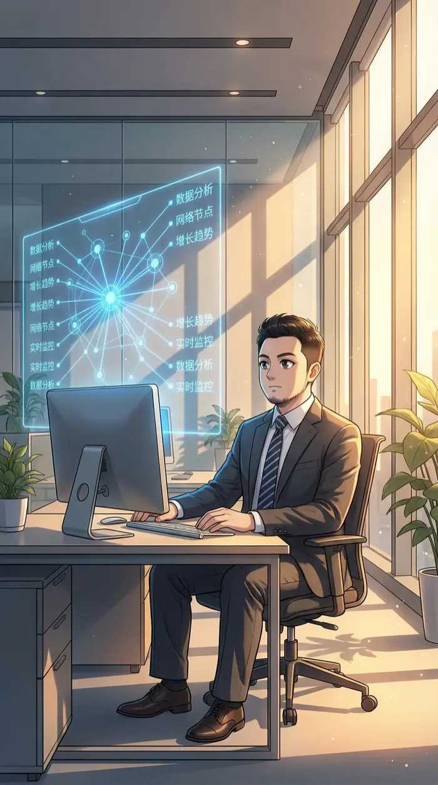
打开辰光自研的AI分析工具，把"影"的架构文件导入。日光中，蓝色的全息投影式数据节点图悬浮在屏幕上方——很酷，也很亮。节点之间的连线错综复杂。"影"不是一条蛇。是一群蛇。各有各的目的，只在"获取辰光核心架构"这个目标上重合。
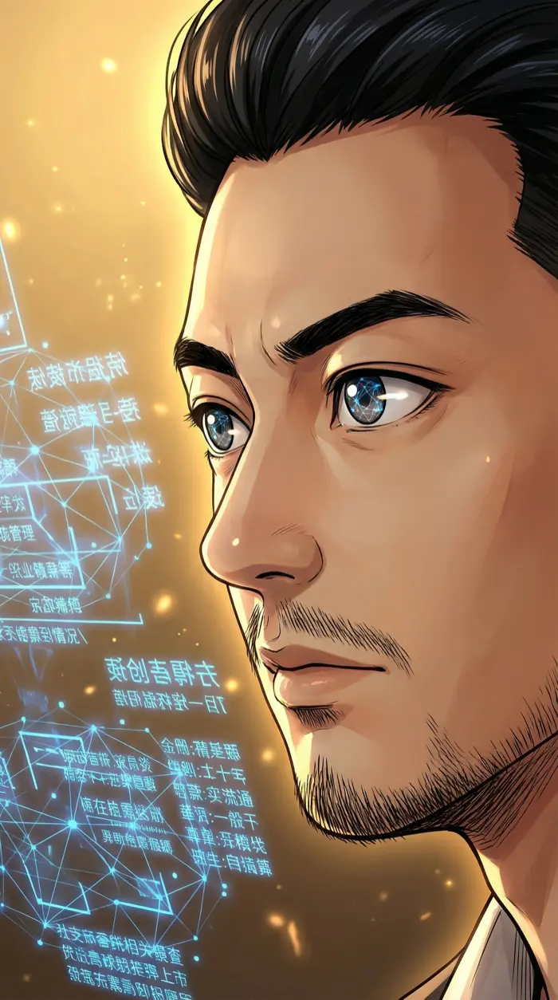
一群蛇里最好对付的是——让它们互相咬。
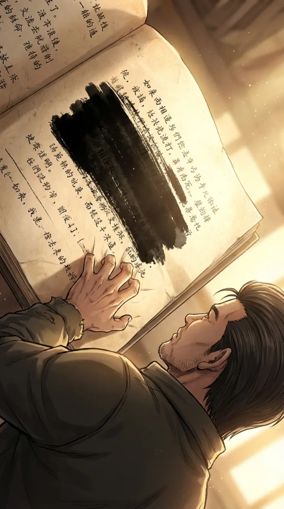
切换到融资协议。目光锁定那个被墨水涂掉的条款——放大，增强。隐约能辨认："核心算法架构使用权，在特定国防需求下，经三方评估后可有限度授权——"后面被涂黑了。手指不自觉地收紧。谁划掉的？更重要的是——谁写进去的？
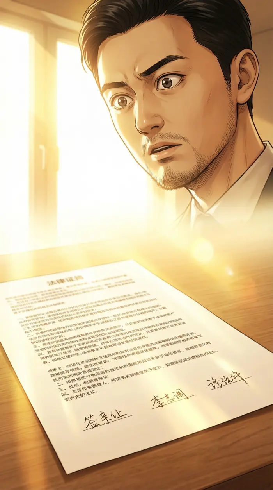
翻到协议末页。除了我和林远的签名，还有第三个——辰光的天使投资人。这个名字我看过无数次，但从没深想过。窗外阳光正好打在这一页上，刺得人睁不开眼。有些东西一直在眼皮底下。只是没人往那个方向看。
安 置 小 鱼
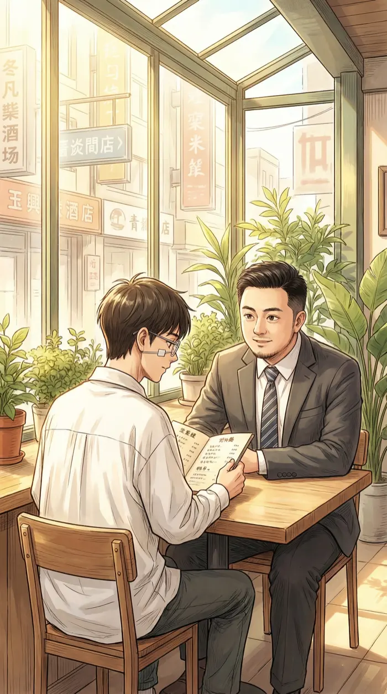
上午十点。辰光附近的咖啡馆——全玻璃房，阳光充沛，绿植环绕。我和小鱼面对面坐在靠窗位。阳光打在小鱼瘦弱的脸上，他的眼镜修好了，但腿上缠着一圈胶带。白衬衫明显偏大——是我借他的。
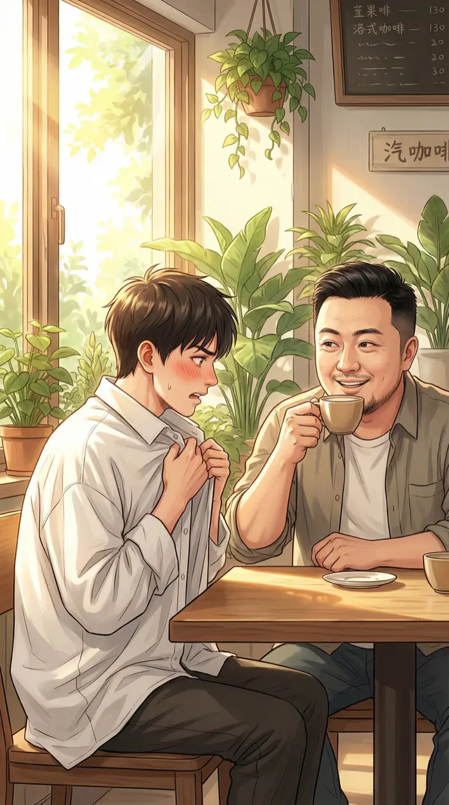
"这衬衫是你的？"
我喝了口咖啡。"备用的，放办公室的。"
"……你穿XL？"
"不许评论CEO的体型。"
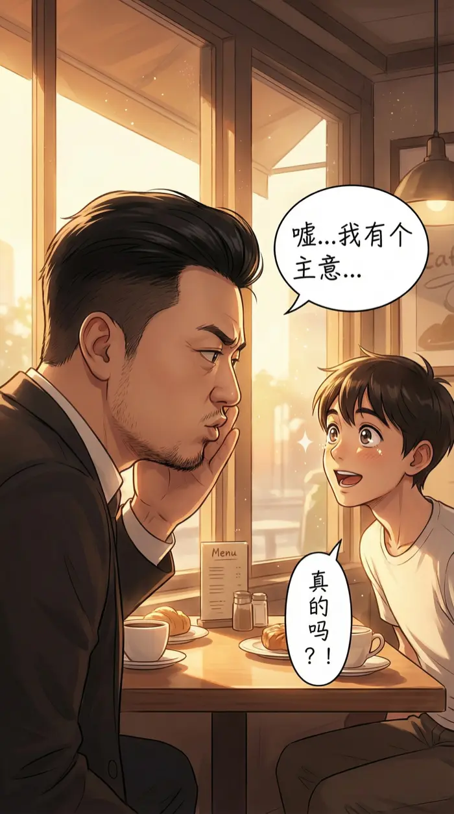
放下咖啡杯，我压低声音。"你不是想知道我是谁吗？我给你个机会。"小鱼的眼睛一下子亮了。"辰光创始期的服务器日志，都在你有权限的数据库里。帮我查一件事：核心算法仓库的所有commit历史。谁push过，谁review过，谁有权限但从没push过。"
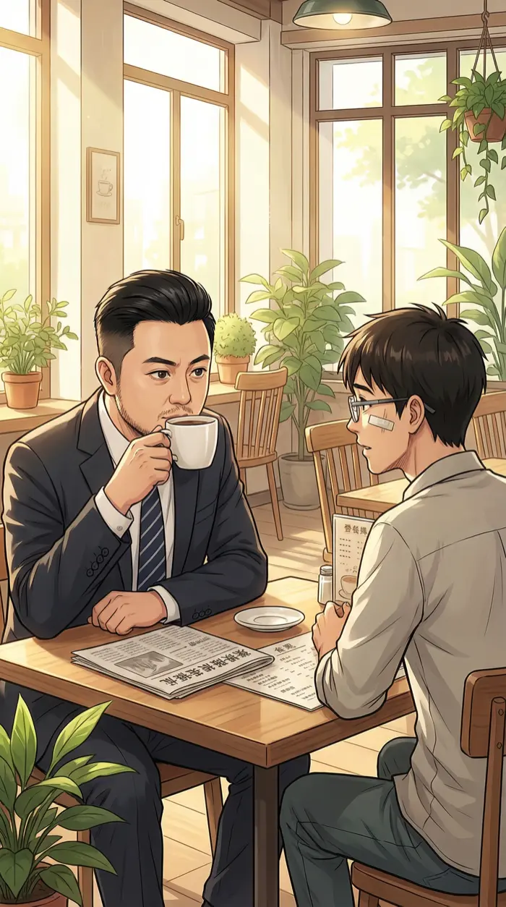
小鱼压着兴奋点了点头——这是他的主场。然后试探性地问："老大，昨晚那个人……你叫他老秦？"我沉默。端起咖啡喝了一口。"以后你会知道。现在——先别告诉任何人你被绑过。"小鱼乖乖点头。
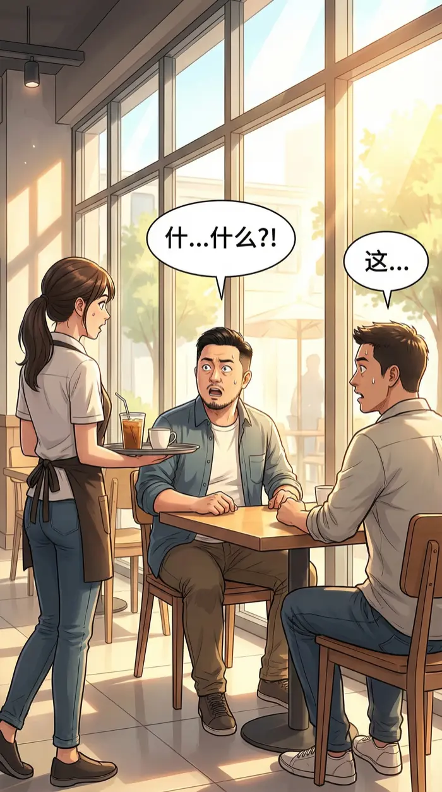
服务员端着托盘走过来——"先生，您的冰美式和……鱼香肉丝盖饭？"我和小鱼同时愣住。"……我没点。""哦抱歉，隔壁桌的。"这个世界在针对我和鱼香肉丝。
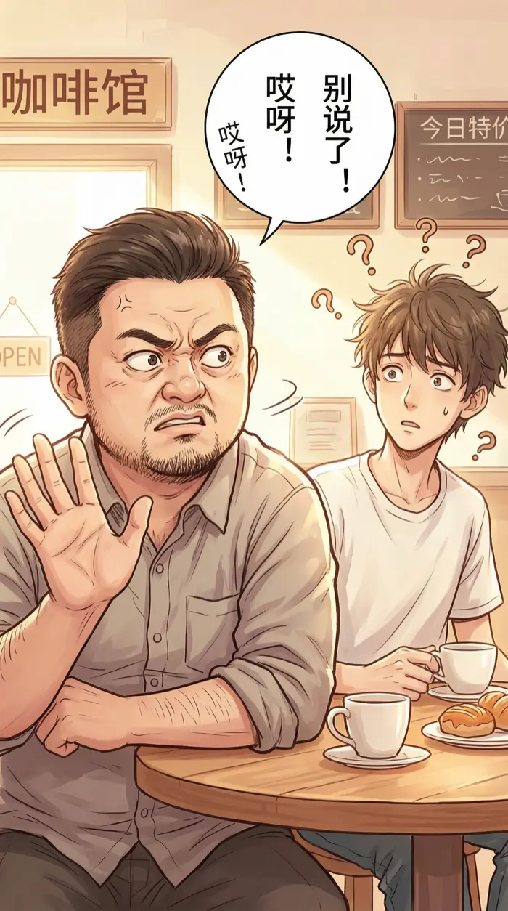
小鱼一脸问号看着我——他不知道前三次"鱼香肉丝事件"。我摆了摆手。"别问。宇宙级玄学。"
技 术 追 查
回到办公室。午前的阳光正盛，整个空间明亮通透。打开AI分析工具，把U盘中"影"的通讯记录导入做语义分析。大屏幕上数据可视化五颜六色。
决策点 D8：如何调查"园丁"
A：直接调取辰光所有员工的入职前背景，大海捞针式排查——系统但慢，会惊动HR
B：从融资协议入手——谁起草的？律所？当年参与尽调的人？——精准但暴露意图
C：用AI分析"影"通讯中"园丁"的语言模式，与辰光内部邮件交叉比对——隐蔽，黑客式
能用代码解决的问题就别用人际关系。而且最隐蔽——不惊动任何人。先拿情报，再行动。
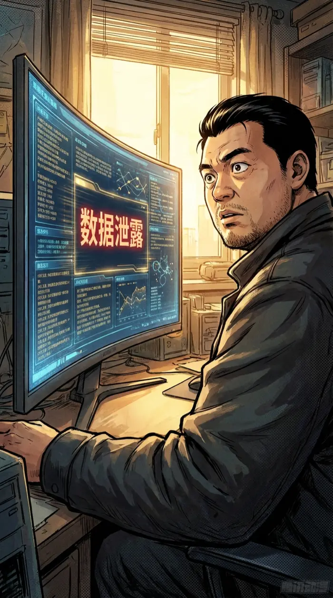
AI跑出第一个关键发现：通讯记录中反复出现一个代号——"园丁"。园丁不是"影"的成员，而是辰光内部的人。他的角色不是间谍——是"种子播种者"。园丁……种下了根。等了五年。
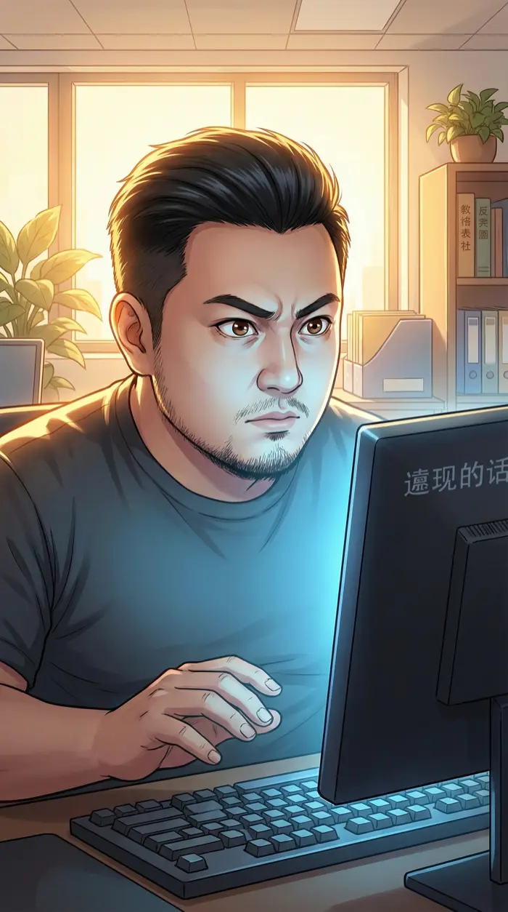
当年正是"园丁"把那个军用AI相关条款写进融资协议的。他在辰光出生的第一天就埋下了伏笔——然后消失在人群里，等着种子发芽。种子在土里，看不见。等它发芽的时候已经太晚了——除非你比它更早往下挖。
手指在键盘上飞速敲击，调整AI比对模型的参数。午前的阳光晒在后背上，暖得让人昏昏欲睡——但屏幕上的数据让人清醒得像灌了三杯浓缩。
午 餐 博 弈
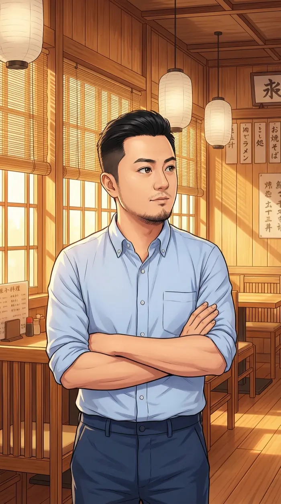
中午十二点半。辰光附近的日料餐厅——明亮的日式装修，原木色调，大面积落地窗，白色纸灯笼。阳光透过竹帘洒在餐桌上。我换了衣服：浅蓝牛津衬衫袖子卷到肘部，深蓝休闲裤。
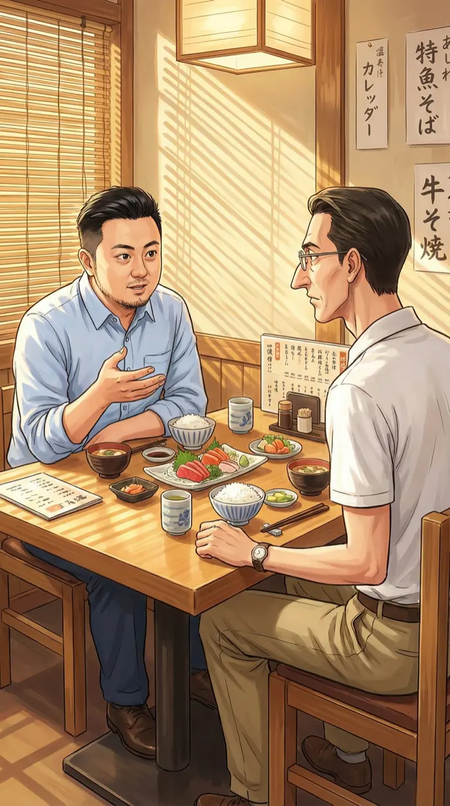
林远坐在对面——白色Polo衫，卡其裤，棕色乐福鞋。一贯的"CTO休闲风"。表面轻松，筷子在手里转了一圈。但我认识他二十年，知道他手指转筷子只有两种情况：无聊，或者紧张。
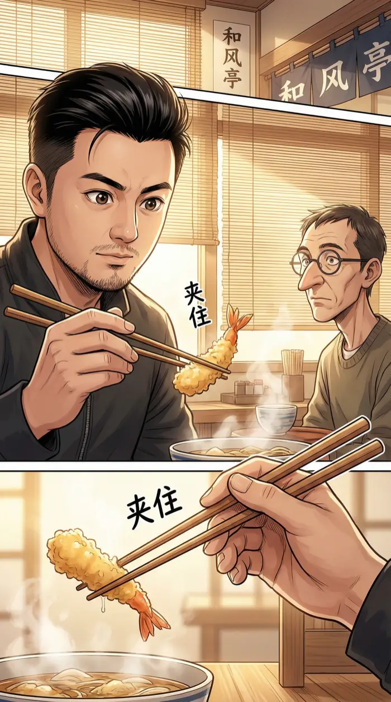
我假装随意地提起。"还记得我们第一轮融资吗？那个天使投资人……叫什么来着？"林远的筷子停了半秒。然后继续夹菜。"周鸿。怎么突然提他？""没什么，整理老文件看到的。他后来退出了吧？""A轮前就退出了。正常的天使退出。"
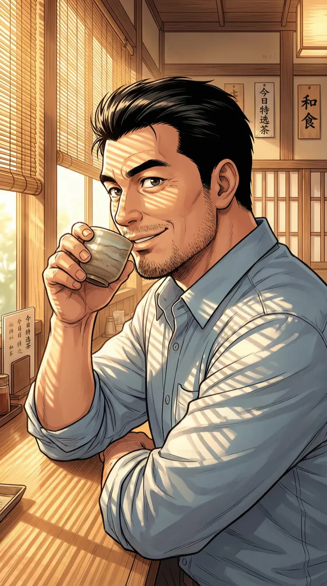
正常的天使退出不会在融资协议里留下一颗定时炸弹。
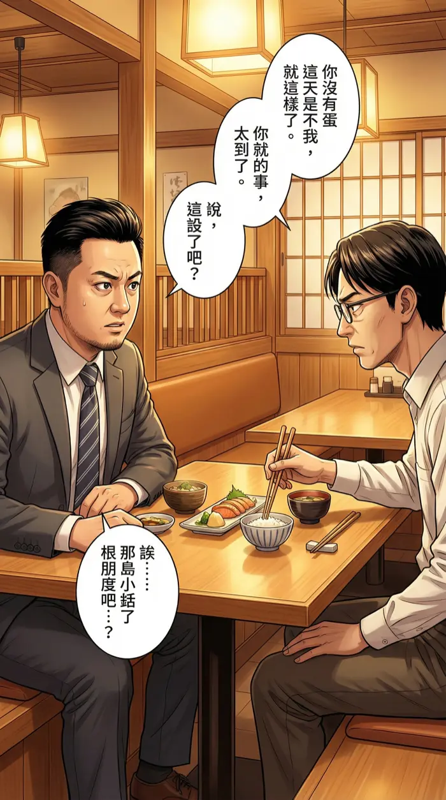
推进话题。"最近我在想，辰光的核心架构当年是你主导设计的。有没有想过……如果这套架构被用在别的领域？"林远放下筷子，认真地看向我的方向。"你想说什么？"
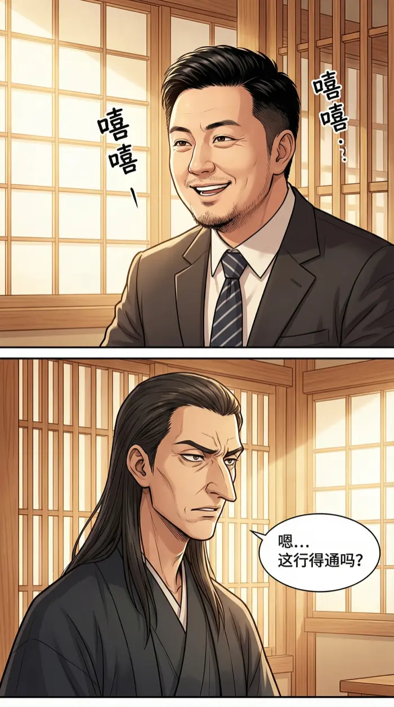
我笑笑。"纯技术好奇。毕竟你是架构师，我只是个CEO。"林远沉默了一会儿。"朱江，我们认识二十年了。你不会'纯技术好奇'。"空气凝固了三秒。
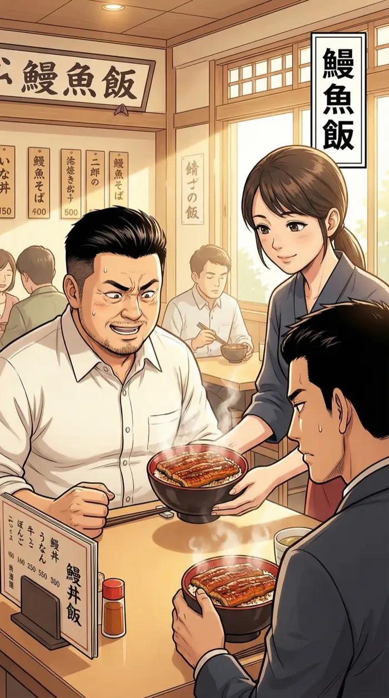
服务员打破僵局——"二位的鳗鱼饭好了。"我们同时收起严肃的表情。"先吃饭。""嗯。"二十年室友的默契——再紧张的局面，饭到了就先吃饭。
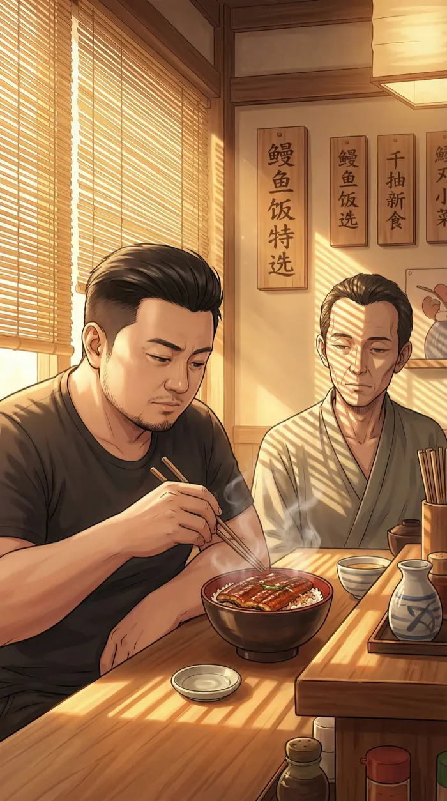
夹起一块鳗鱼。酱汁的甜味混着米饭的香气。窗外阳光正好，竹帘的影子投在林远的脸上，明暗交错。就像这个人——有些部分在光里，有些部分在影里。
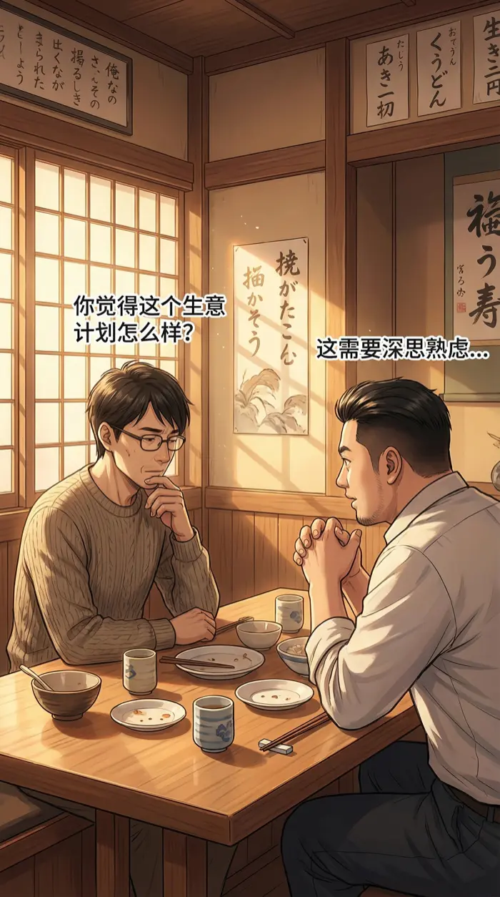
饭后。我直接问。"最近公司安全事件频发。你觉得问题出在哪？""技术层面，防线没问题。问题出在人。""你怀疑谁？"
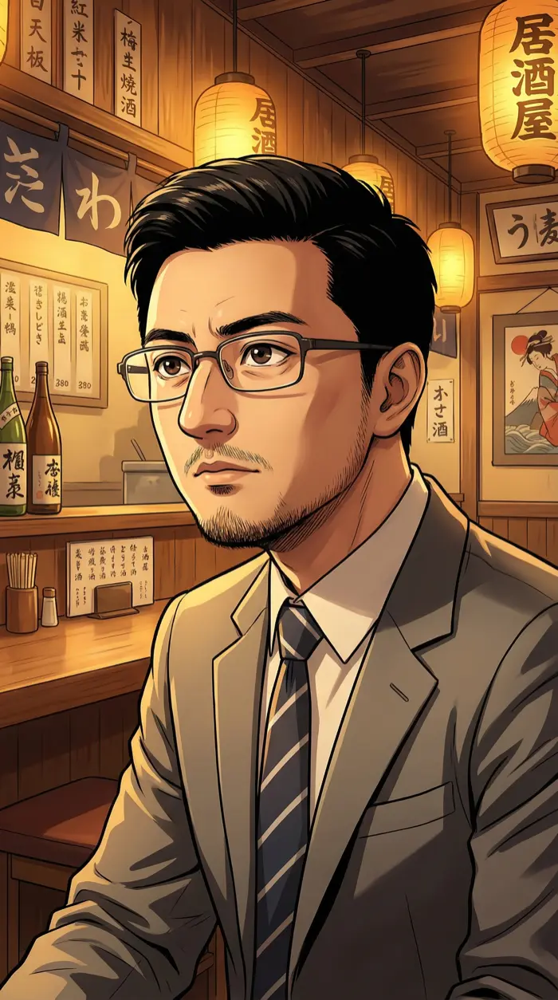
林远看了我很久。"如果我告诉你，我觉得陈副总没问题呢？"这句话出乎我的意料。
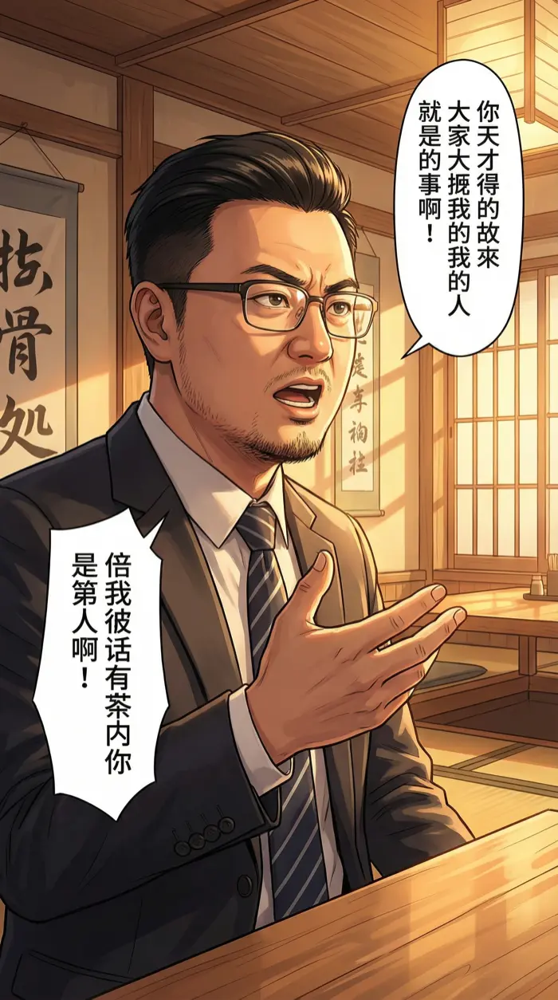
"陈副总贪小便宜，但他没胆子碰核心系统。真正危险的人……不会让你看出他危险。"林远在暗示什么？他知道多少？他是在帮我——还是在试探我？
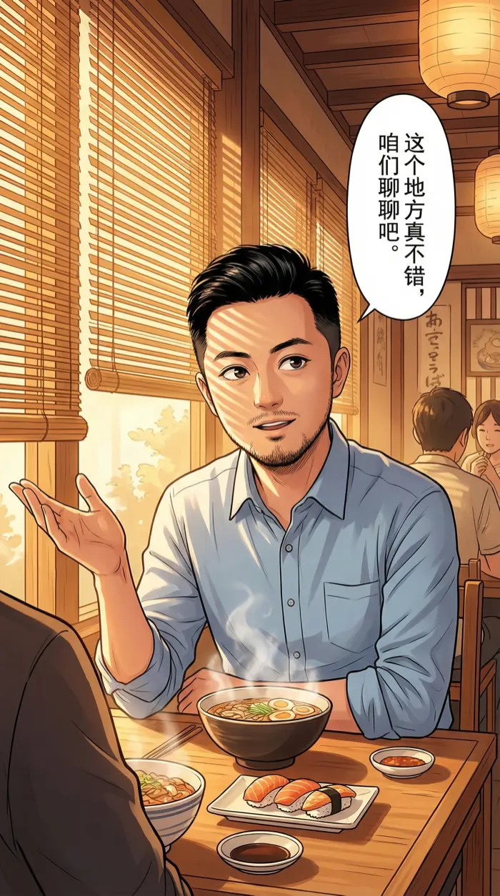
我决定冒一个小险。"你有没有听过一个代号——'园丁'？"
决策点 D9：如何对待林远
A：完全信任——二十年兄弟，把U盘的事全告诉他，获得最强盟友
B：继续观察——不排除也不确认，喂信息看反应，稳妥推进
菩萨心肠让我不愿怀疑兄弟，但霹雳手段让我不会在确认前交出底牌。老秦主动暴露了一切所以我选择信任，林远还有隐瞒。我的信任规则：你对我透明，我才对你透明。
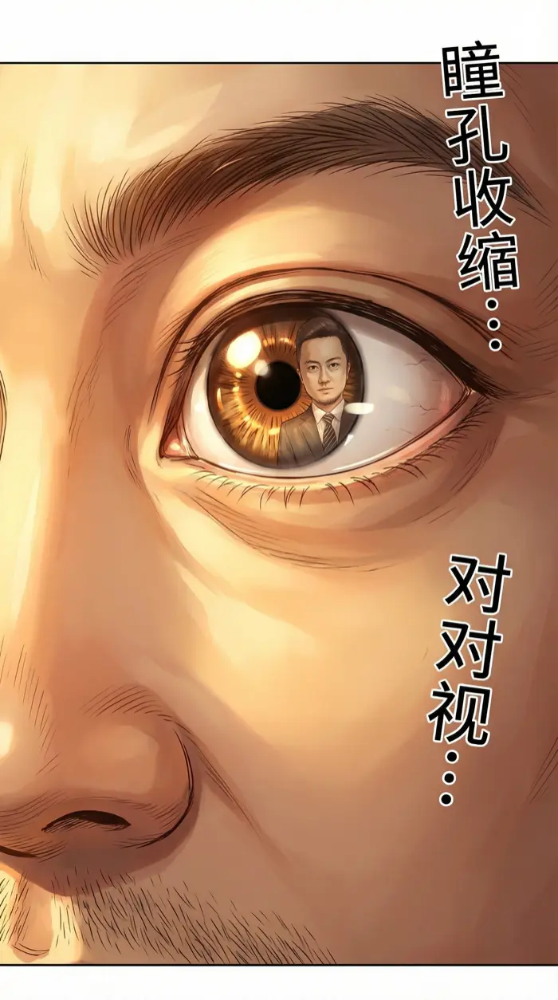
林远的瞳孔缩了一下——只有一瞬间。然后他摇头。"没听过。"我观察到了那零点三秒。0.3秒的瞳孔收缩。他听过。问题是——他是园丁的追查者，还是园丁本人？
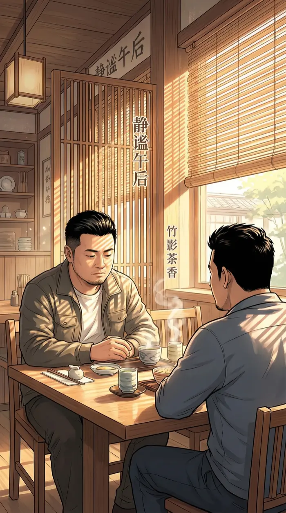
阳光从竹帘后打过来，在我们之间的桌面上投下条纹般的光影。两个认识了二十年的人，对坐无言。鳗鱼饭的香气还在空气中。我们从大学宿舍的上下铺走到今天。上铺的人，我还信得过吗？
人 的 根
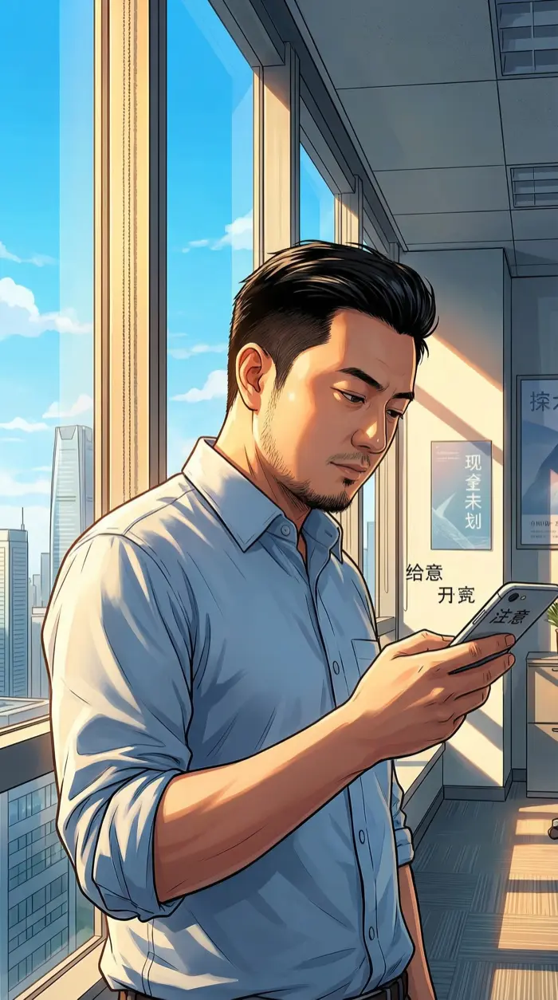
下午三点。回到辰光总部。落地窗外，深圳的午后阳光依然强烈，天空湛蓝得像渲染过头的电脑壁纸。小鱼传来初步结果。
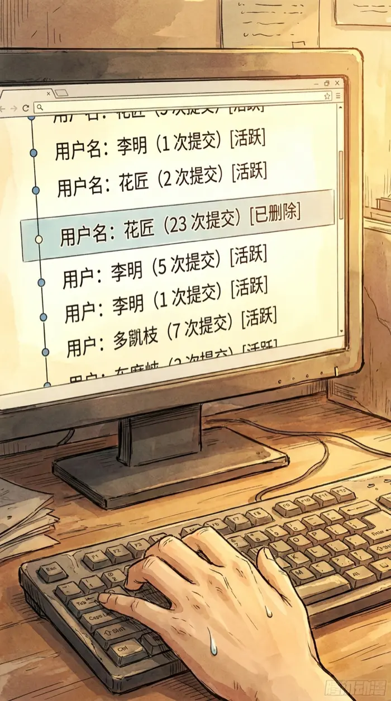
辰光成立第一年的核心仓库commit历史——林远：1,247次。我：89次。陈副总：0次。但是——有一个账号在第一年push了23次代码，然后在A轮融资后被删除。账号名："gardener"。手心开始出汗。
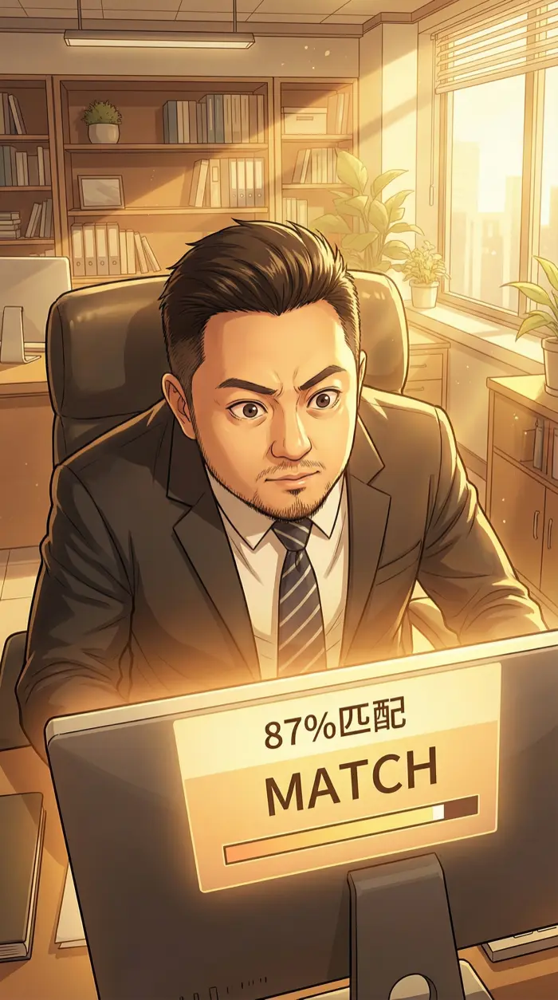
让AI交叉比对gardener的代码风格和"影"通讯中"园丁"的语言模式。进度条缓缓爬动。结果弹出——匹配率：87%。
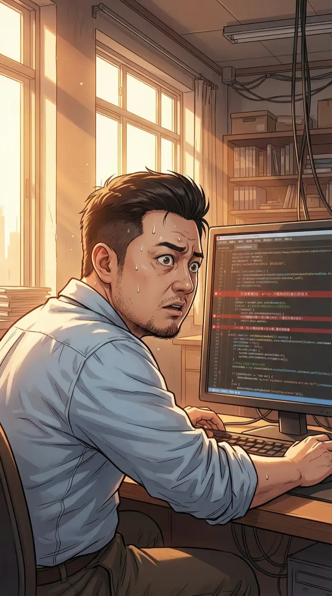
更关键的发现：gardener push的23次代码中，有3次不是写新功能——是在核心架构中埋了接口。这些接口平时不激活，但知道调用方式的人可以绕过所有安全协议，直接访问底层模型。后门。他在辰光出生的第一天就种下了后门。然后删掉了园丁的身份，像什么都没发生过……等着它长大。
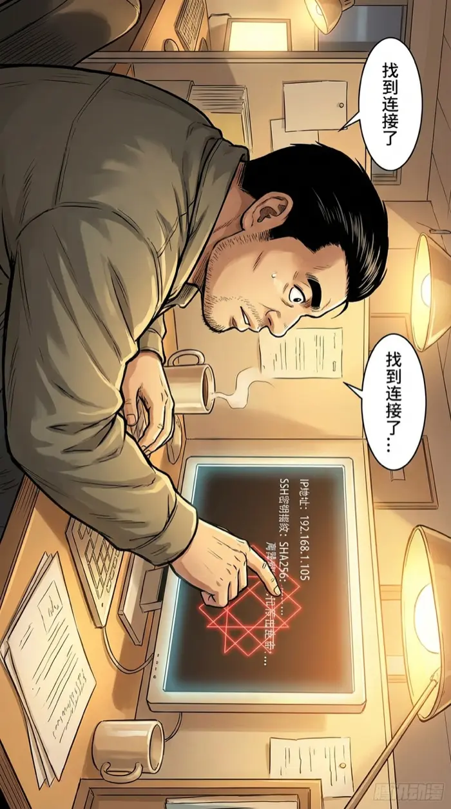
继续追查gardener账号的创建IP和SSH密钥。创建IP来自辰光第一间办公室——2019年的合租写字楼。SSH密钥的fingerprint与当前辰光内部某个活跃账号的子密钥有部分重叠。园丁现在还在辰光。而且有高级权限。
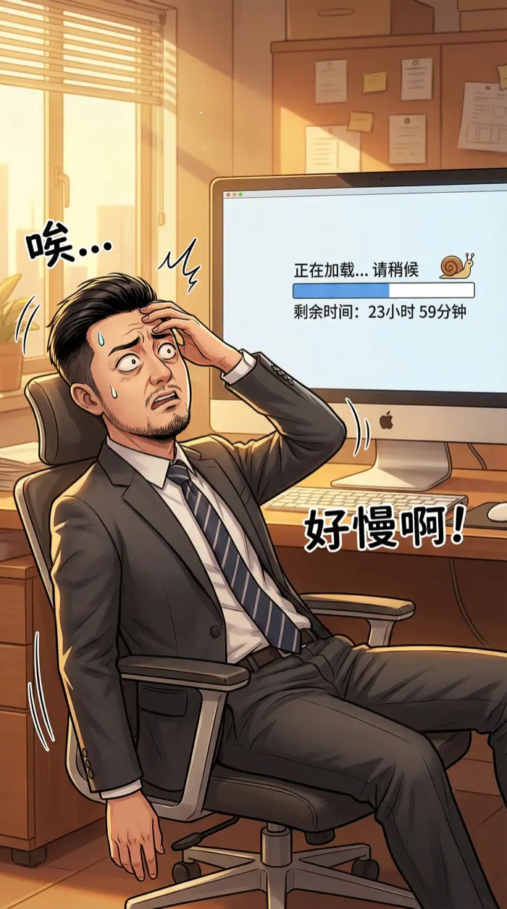
但AI比对还需要更多维度的数据来确定具体是谁。进度条弹出："预计完成时间：约4小时37分钟"。我瘫在椅子上。科技改变生活，但改变不了等进度条的痛苦。
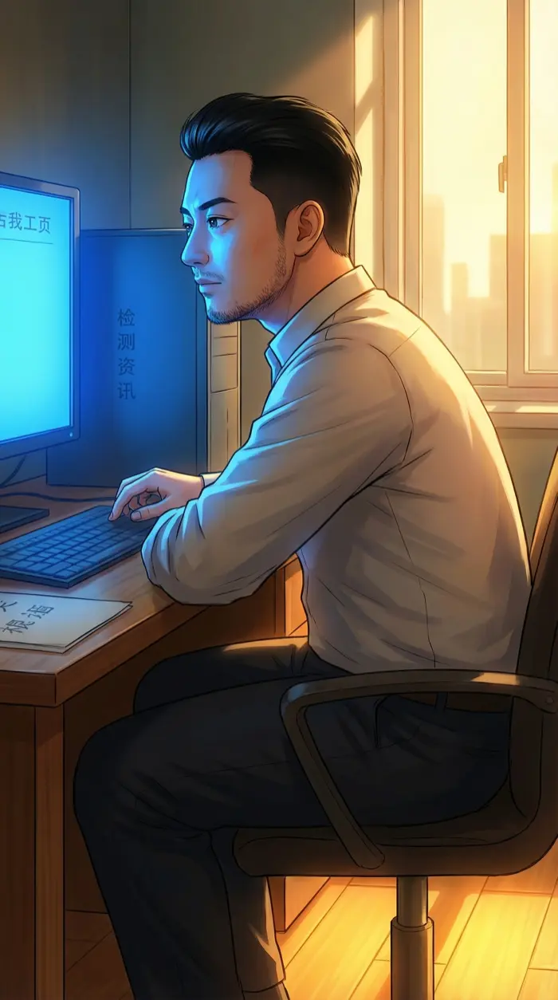
屏幕蓝光和窗外日光在脸上形成双色光源。手指无意识地敲着桌面——这是我紧张时的老习惯。窗外金色的午后光线一寸寸移过地板。
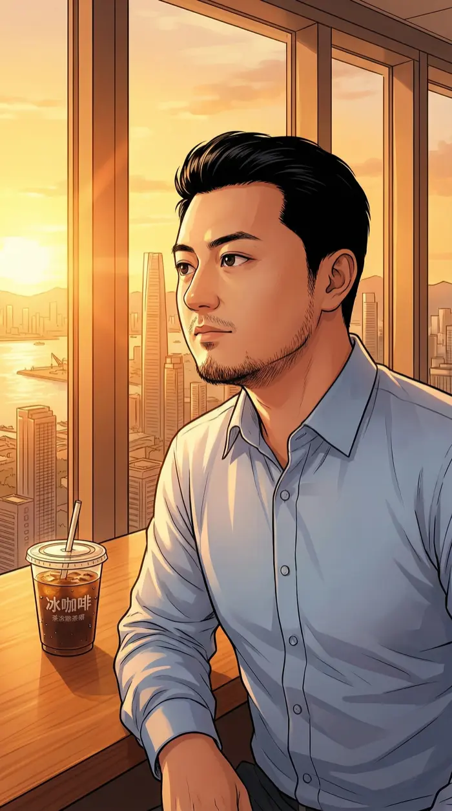
下午五点。夕阳把办公室染成金色。那杯咖啡早就凉了。站在落地窗前，看着深圳的天际线被落日烧成一片暖橘色。
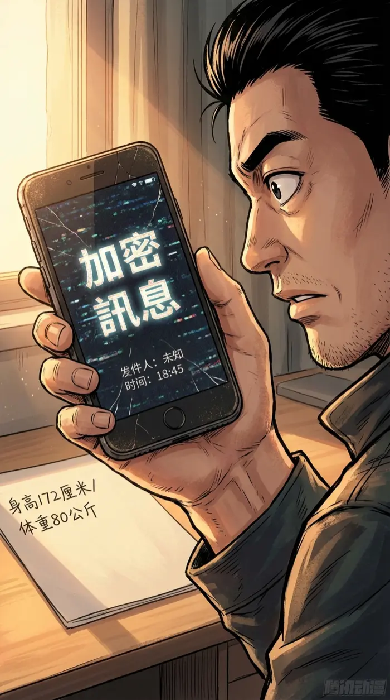
手机震动。一条加密消息——来自老秦。只有四个字："园丁浇水了。""浇水"——意味着园丁在行动。现在。
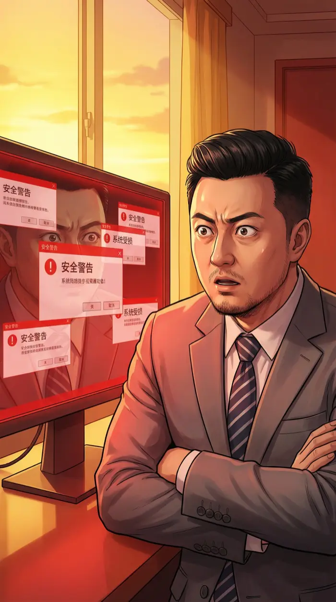
紧接着辰光的安全系统发出告警——核心服务器检测到异常访问。不是外部攻击。是内部调用。种子发芽了。他在激活那些后门。
根 在 脚 下
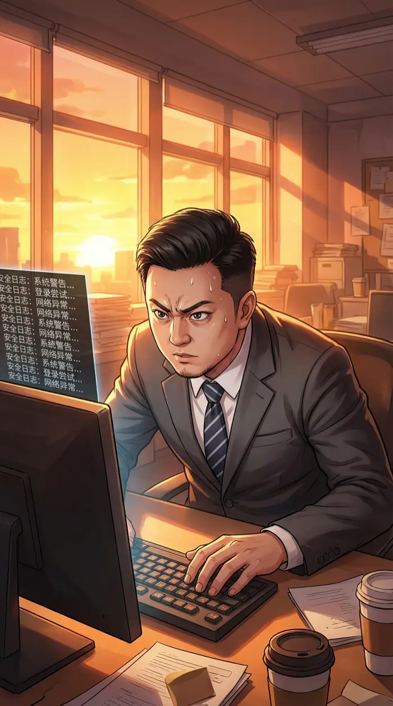
冲回电脑前。安全日志在屏幕上疯狂滚动——有人正在通过那三个五年前埋下的后门接口调用核心模型。调用者的权限等级：L5——仅次于CEO和CTO。辰光L5权限只有四个人：我、林远、陈副总、还有——
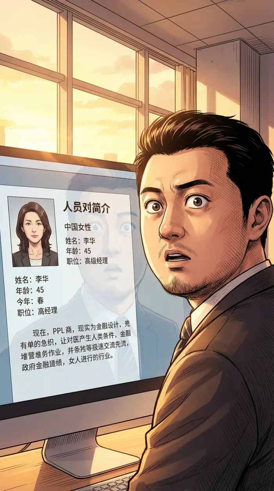
人力资源总监赵薇。一个从未进入过我雷达的人。所有人都在看陈副总。没人看HR。
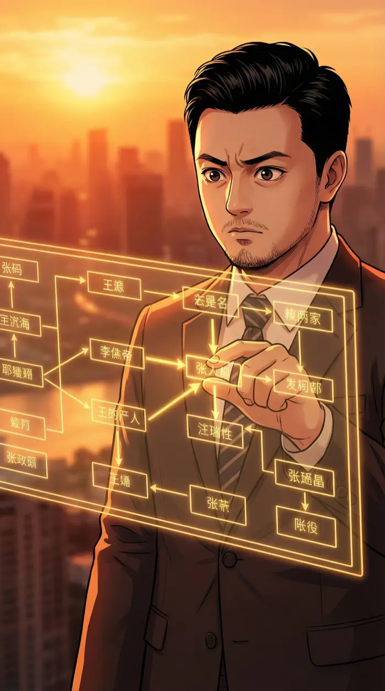
拉出赵薇的档案。入职时间：辰光成立第一年。推荐人：天使投资人周鸿。所有碎片在一瞬间串联——周鸿投资辰光→推荐赵薇入职→赵薇创建gardener→埋下后门→周鸿退出→后门休眠五年→"影"激活。
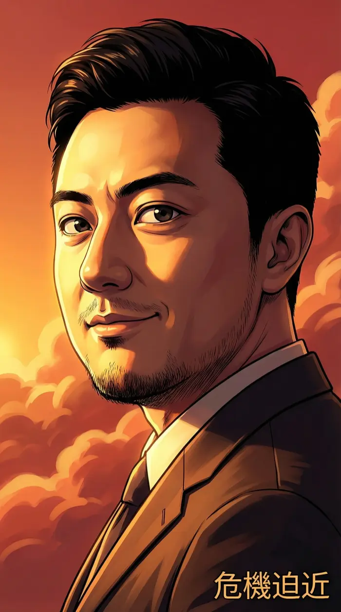
但赵薇是HR总监。她有L5权限但没有技术能力push代码。要么她背后还有人，要么……她不是一个人在战斗。我公司的HR在搞间谍活动。这可能是"人力资源"这个词最准确的一次使用。
决策点 D10：紧急应对
A：立刻切断赵薇的权限、封锁后门——止血最快，但打草惊蛇
B：不切断，悄悄部署蜜罐——记录她传输了什么，可能获取完整证据链
让她以为后门还在，但数据流经我的蜜罐。决策一脉相承：永远先拿完整情报再行动。这次stakes最高——核心技术正在被调用。但预期情报价值极高时，值得承受短期风险。
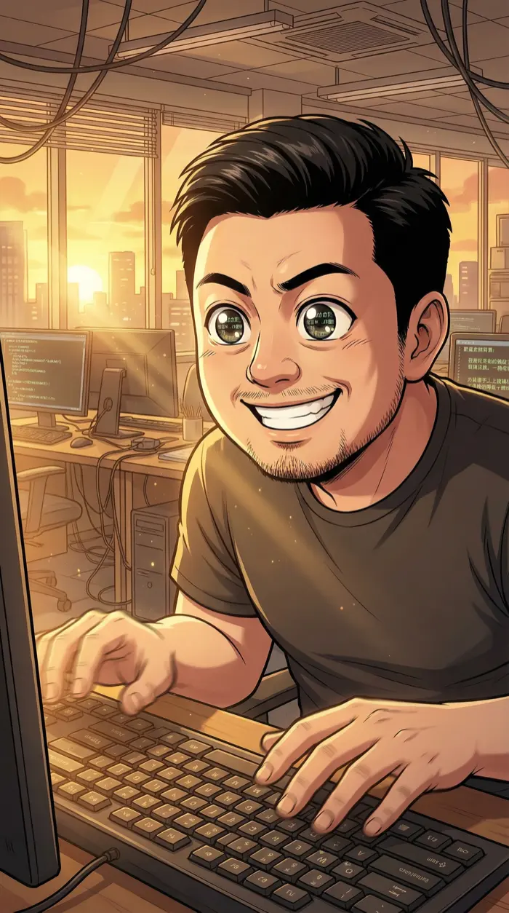
十分钟。把后门接口的输出重定向到隔离沙箱。真正的核心数据不会泄露，但赵薇和她背后的人会看到"成功获取"的假数据。手指在键盘上飞舞——这种感觉，比当CEO爽多了。你种了根，我浇了假水。看谁先发现。
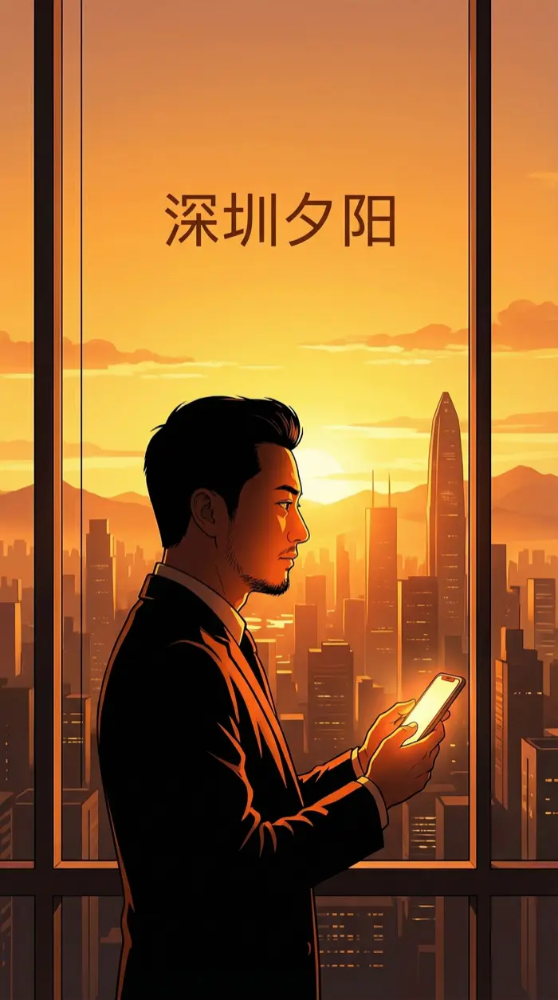
站起身。夕阳的最后一缕光打在脸上。深圳的天际线在落日中燃烧，像一条金色的伤疤。手机响了。屏幕上两个字：林远。我盯着那两个字。没有接。园丁用的SSH密钥和辰光内部某个活跃账号部分重叠。AI还没跑完比对。但我心里有一个我不想承认的答案。
第四章 · 根 — 完
园丁=赵薇？还是赵薇背后另有人？
林远那0.3秒的瞳孔收缩意味着什么？
SSH密钥部分重叠的活跃账号是谁？
蜜罐能骗过"影"多久？
老秦的"园丁浇水了"——他怎么知道的这么快？
第五章：芽 · 即将更新